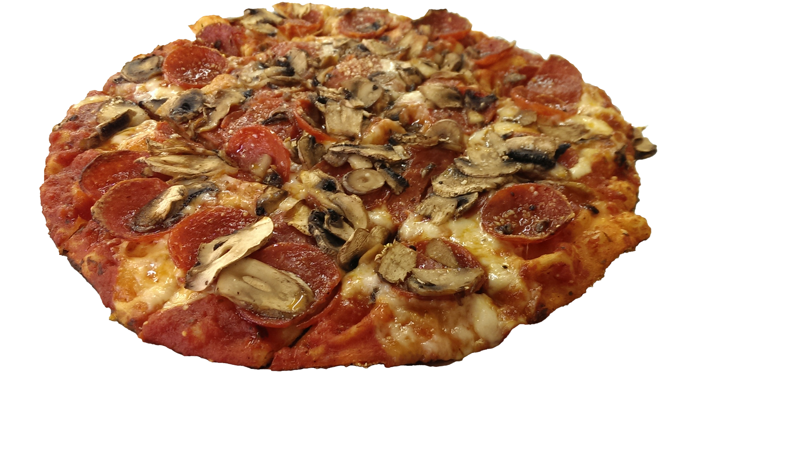

What Is "Columbus Style" or "Central Ohio Style" Pizza?
Columbus and Central Ohio have had pizza culture since the late 1940s (that's covered in depth here). It has evolved into a unique, recognizable and delicious regional style, as beloved and significant as a Chicago hotdog (in fact, Columbus pizza has its origin in Chicago [link]). It's not a household known style, like Chicago's hot dogs and deep dish, or Cincinnati's chili, and it's only been in recent years that it's been acknowledged outside the immediate area. The earliest online attempt to define it seems to date to a 2009 post on the restaurant review site yelp. The original thread is here in its entirety, but this excerpt quite accurately describes the fundamental characteristics of what has become known as a unique style that can be found in Columbus and the surrounding region, but is almost entirely unavailable elsewhere:
In this day and age, it is amazing that there is knowledge which isn't summarized on Wikipedia. It's kind of like getting your head around the idea that in the present-day continental United States, there are still huge swaths of uncharted woodlands where a crashed plane or wanted fugitive can exist for years without being found by the authorities. And so it is with Ohio style pizza --it accounts for a nontrivial amount of the pizza consumed in this country yearly, but it's off the radar of most pizza taxonomies. To that end, I shall now undertake to formally expound on this unique variety of Pizza:
Much like the earliest American punk rock appeared in Ohio and a few other places spontaneously and simultaneously, so too did the square-cutting of pizza pies. In fact, this cut is often referred to as "Columbus Cut" by pizza nerds. It is the one universally defining feature of Ohio style pizza --it is cut into squares.
Next, and almost as important, it is crispy. A bite into any given pizza square must have a high probability of leaving crumbs for it to be truly Ohio style pizza. By way of comparison, it is quite likely, when biting into many local (Chicago) thin squares, for the majority of the square's toppings and cheese, to be pulled off the pizza. This does not happen with Ohio style pizza, because the cheese is applied more sparingly than it generally is here, resulting in a less grease-lubricated square. It is not unusual to get a thin square-cut pizza in Chicago where you wouldn't necessarily know what the toppings are before you bite into it, because they have been covered with cheese. With Ohio style pizza, each and every topping is visible under the relatively sparse sprinkling of pizza cheese. The cheese can be mozzarella, provolone or a blend of the two.
With regard to these toppings: the toppings are small, numerous and spread edge-to-edge. Though it is not quite a universal hallmark of Ohio style pizza, the pepperoni used is typically of the smallest size available from the distributor, about the size of a quarter. With Ohio style pizza, each topping can be tasted distinctly --the hierarchy of emphasis is the taste of the toppings, followed closely by the sauce, then the crust; the cheese is almost an afterthought, there mostly to hold the toppings on. Some will argue that it goes sauce then toppings, and I would agree that is an acceptable order too. The crust is quite often cornmeal, though not universally so --what is important is that it be crispy, not soggy. The sauce tends to be slightly sweet.
Ohio style pizza is typified by the thin crusts available at Cassano's or Donato's. Those are not necessarily the best examples, but they are the easiest to find, since both are chains (though not very far-flung ones --Cassano's itself is confined to the Dayton area). Some of the best examples are found at little mom 'n' pop operations in small towns (Mike's Pizza in Galion comes to mind). Often times the crust at these mom and pop joints will be a little thicker than what you get at Cassano's or Donato's, but it will always be crispy.
1. Square cut
2. Thin, crispy crust (often of cornmeal)
3. Less cheese
4. Edge-to-edge toppings, small pepperoni
5. Slightly sweet sauce
6. Toppings visible, not covered with cheese
Main Content
Right Content

classic example from Rubino's, in Bexley, Ohio.